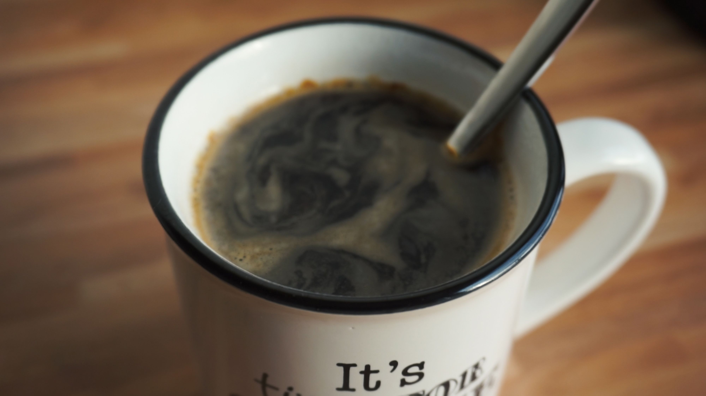
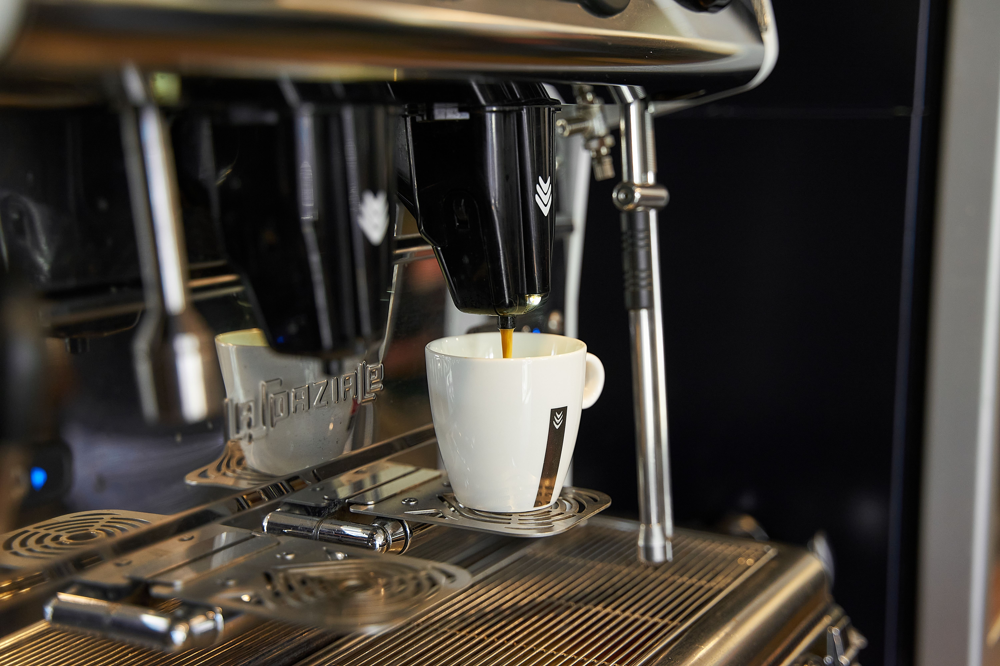

Cafés Especiais Selecionados na Origem
A Grão & Arte conecta pequenos produtores de cafés especiais diretamente à sua xícara. Nossos grãos 100% Arábica possuem rastreabilidade completa, pontuação acima de 85 pontos SCA e torra artesanal semanal.
A Grão & Arte conecta pequenos produtores de cafés especiais diretamente à sua xícara. Nossos grãos 100% Arábica possuem rastreabilidade completa, pontuação acima de 85 pontos SCA e torra artesanal semanal.
Notas sensoriais de chocolate ao leite e avelã. Torra média clara com acidez cítrica agradável e corpo aveludado.

Notas florais marcantes e toque de rapadura. Torra clara que preserva a doçura natural e o aroma complexo do grão.

Notas de frutas amarelas e caramelo intenso. Torra média com doçura elevada e finalização prolongada

Acompanhamos de perto todas as etapas: colheita seletiva manual dos frutos maduros, secagem em terreiros suspensos e perfilamento de torra computadorizado para extrair o máximo potencial de cada lote.
1 Pacote de 250g de café especial por mês + Cartão explicativo com o perfil sensorial do lote.
2 Pacotes de 250g de microlotes diferentes por mês + Brindes exclusivos e frete grátis.
1kg de café em grãos ou moído semanalmente para quem não vive sem um café fresco de altíssima qualidade.
O café especial é composto por grãos 100% Arábica sem defeitos, avaliados pela Specialty Coffee Association (SCA) com nota acima de 80 pontos, oferecendo sabores e aromas naturais sem necessidade de torra queimada.
Recomendamos comprar em grãos e moer imediatamente antes do preparo para preservar todos os óleos essenciais e aromas. No entanto, enviamos moído na espessura ideal para o seu método caso prefira.
As torras do clube ocorrem toda primeira segunda-feira do mês. Os cafés são embalados e despachados em até 24 horas após a torra para garantirmos o máximo de frescor.
O café não estraga rapidamente, mas atinge seu ápice sensorial entre o 7º e o 30º dia após a data da torra estampada no pacote.